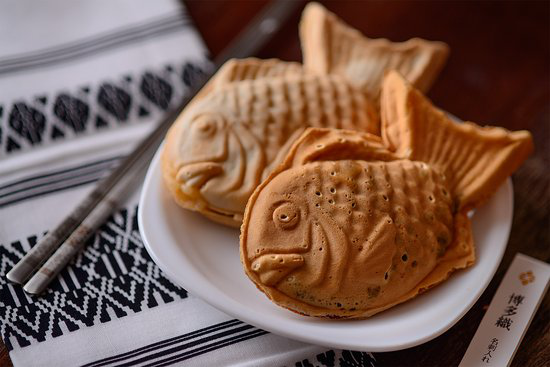

Тайяки

Ингредиенты (4 порции):
Апельсины - 300 г
Мука пшеничная - 200 г
Сыр Филадельфия - 175 г
Шоколад темный - 100 г
Яйцо - 2 шт
Сахар - 50 г
Разрыхлитель - 6 г
Приготовление:
Шоколад измельчить. С апельсина снять цедру и отжать срок. Муку просеять, добавить разрыхлитель и сахар.
Смещать сок, цедру, сыр и яйца, перемешать. Добавить муку, взбить миксером. Начать готовить - 10-13 минут.